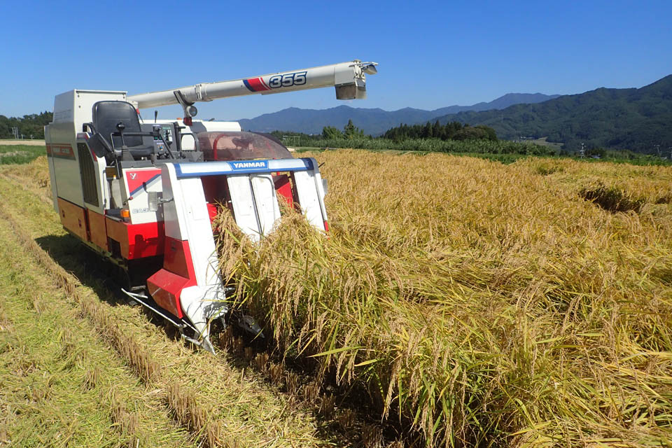
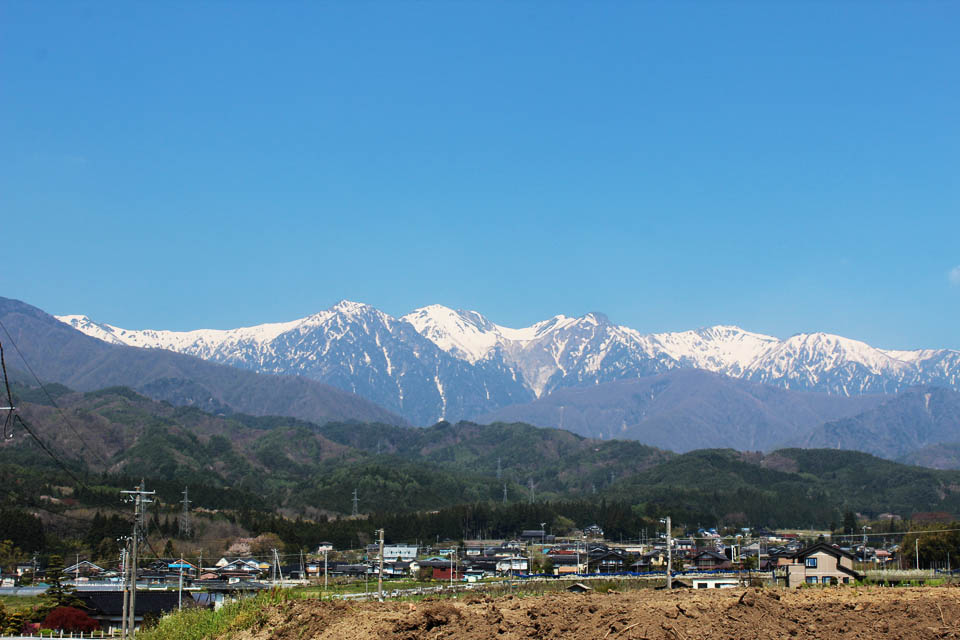
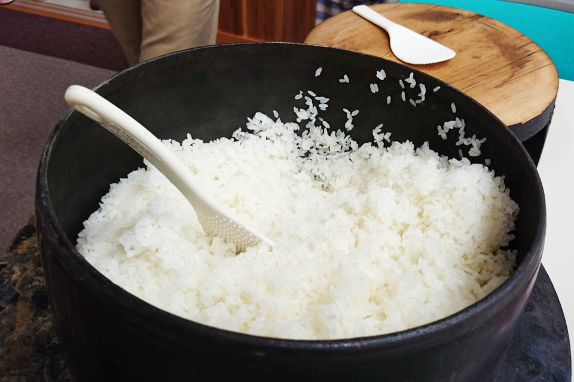

- 
- 

- 
長野県飯島町で真摯にお米作りに打ち込んでいます、お米の座光寺農園です。
毎日口に入れるお米、安心や美味しさを心から実感できるものを提供したいと考えています。
そのために、お米の生育環境、農法、そして生産者自身の情報を、積極的に提供させていただきます。
どこで作っているのか、どんな風につくっているのか、誰が作っているのかを皆様に知っていただき、そこに共感を得ていただきましたら、ぜひ座光寺農園のお米を食してみてください。